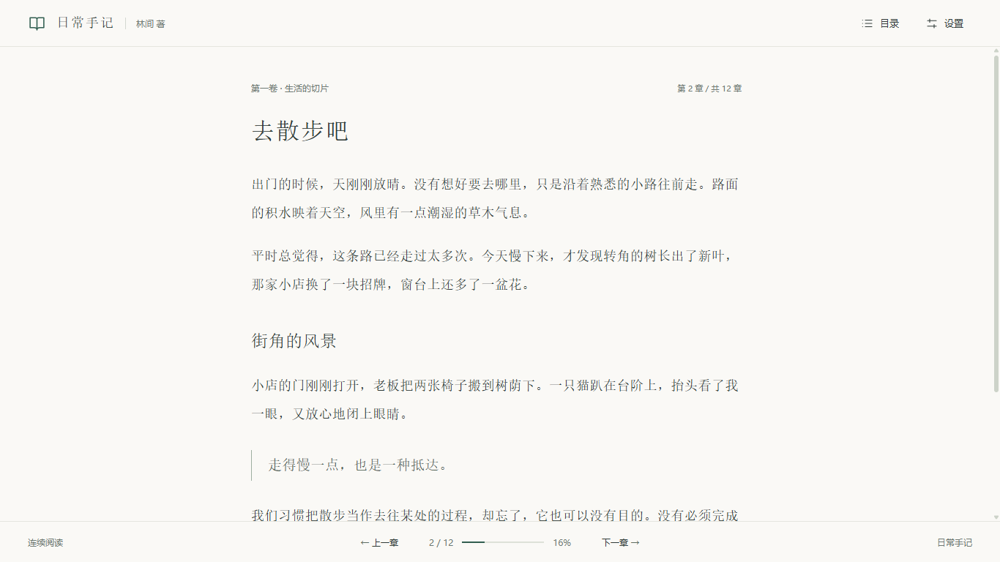

让写下的文字，
成为读得舒服的作品。

原生 Markdown 文件。打开文件夹，就能开始写。所见即所得 · 随时切回源码
同一份文字，两种视角Markdown → 正文
## 把日子写下来
留住那些 **值得记住** 的时刻。
留住那些 **值得记住** 的时刻。
把日子写下来
留住那些 值得记住 的时刻。
留住那些 值得记住 的时刻。
选好章节，设置封面，把散落的 Markdown 整理成阅读网站。保留文字的顺序，也让阅读有自己的节奏。
从自己的文件出发，
导出一份可以带走的阅读体验。

导出 PDF、HTML 或长图，
用于留存、交付与分享。
挑选排版，一键复制。
公式与图表也能带过去。
把目录导出为阅读网站，
离线打开，或发布到网上。
本地 Markdown 文件与文件夹，
熟悉的组织方式，随时用其他工具打开。
大纲导航、全文搜索、公式与图表，
让整理想法和查找内容更顺手。
草稿恢复与自动保存，浅色与深色主题，
照顾每一次日常写作。
免费下载 Posemark。无需注册，打开就能写。